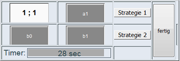
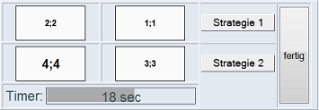
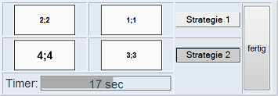

Bild 1 Felder öffnen und schließen |
Die Aufgabe: Du nimmst heute an einem wissenschaftlichen Experiment teil. Deine Aufgabe besteht darin, Entscheidungen zu treffen -
möglichst schnell und mit möglichst hohem Ergebnis für dich. Je nach Experimentversion sollst du dich dabei für eine Strategie oder gegen alle bis auf eine Strategie entscheiden (siehe Bild 1). |

Bild 2 Strategiewahl und Abschluss |
Die Matrix: Alle Spiele werden in Matrixform präsentiert, wie zum Beispiel im Bild 2. Du siehst hier eine 2x2-Ergebnis-Matrix mit jeweils zwei Zeilen und zwei Spalten. Die Zahlen in den Feldern symbolisieren Punkte:
die erste Zahl deine und die zweite Zahl die deines Gegenspielers. Eine Zeile entspricht einer Entscheidungsmöglichkeit (=Strategie) für dich. Deinen Gegenspieler wählt eine Spalte aus.
Gegebenenfalls sind die Zahlen in den Feldern anfangs noch verdeckt. Durch Klick mit der Maus auf das Feld kannst du sie
anzeigen lassen oder wieder verschließen, falls du sie nicht mehr benötigst. Unter der Ergebnis-Matrix zeigt dir der Timer an, wieviel Zeit dir noch für deine Entscheidung bleibt. In diesem Fall sind es noch 18 Sekunden.
Hast du deine Entscheidung getroffen und durch anklicken der jeweiligen Strategie(n) angezeigt, so kannst du dieses Spiel durch Mausklick auf den
Knopf "fertig" beenden. Du gelangst damit, je nach Spielrunde, entweder zu einem weiteren Spiel, zu einem Pausebildschirm zwischen den Spielrunden oder zum Endbildschirm. Pro Spielrunde spielst du vier Spiele
gleicher Größe, aber unterschiedlicher Zeitbeschränkung. Mit fortschreitendem Experiment nehmen auch die Entscheidungsmöglichkeiten zu.
Bei fünf pro Spieler ist aber Schluss.
|

Bild 3 Punkte erzielen | Die Punkte: In jedem Spiel bekommst du für deine Entscheidung Punkte.
Die Anzahl richtet sich nach deiner Entscheidung und nach der deines Gegners: wenn du dich für eine Zeile entscheidest, hängt es von der Entscheidung des Gegenspielers ab
(Spalte links oder Spalte rechts), ob du die Punkte aus dem Feld links oder aus dem Feld rechts bekommst. Was der jeweils andere für eine Strategie wählt, wisst ihr aber zum Zeitpunkt eurer Entscheidung nicht. Triffst du keine Entscheidung
innerhalb der vorgegebenen Zeit, ist dein Ergebnis Null und dein Gegenspieler erzielt den jeweils höchsten Wert seiner Strategiewahl.
Wählst du im Beispiel-Bild 3 Strategie 2 und dein Gegenspieler seine Strategie "links", so realisiert ihr das Ergebnisfeld links unten und jeder erhält 4 Punkte für die Endabrechnung.
Hättest du Strategie 1 gewählt und dein Gegenspieler seine Strategie "rechts", würde jeder 1 Punkt bekommen usw. Die jeweils erste Zahl entspricht dabei stets deinen Punkten. |